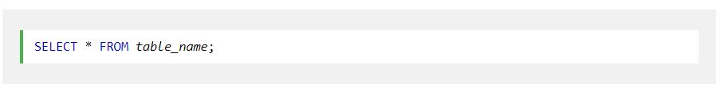

The SELECT statement is used to select data from a database.
The data returned is stored in a result table, called the result-set.
Here, column1, column2, ... are the field names of the table you want to select data from. If you want to select all the fields available in the table, use the following syntax:
